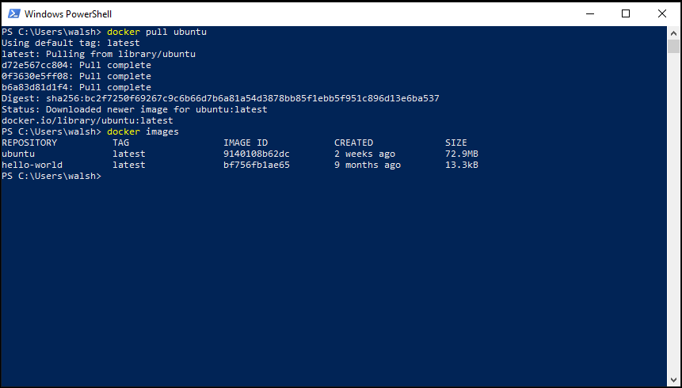
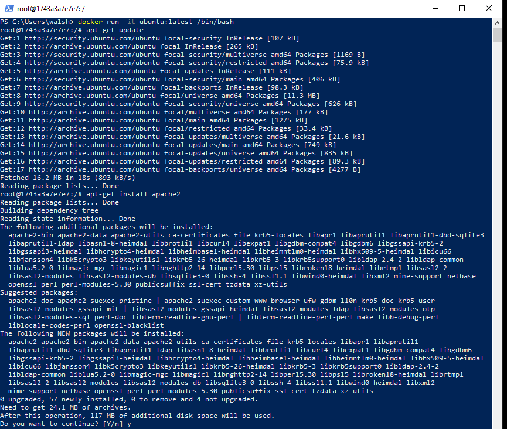
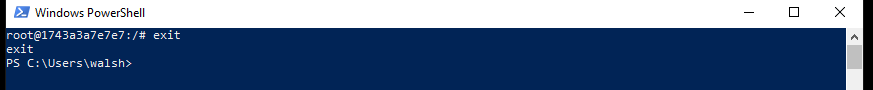
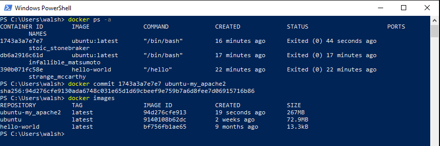
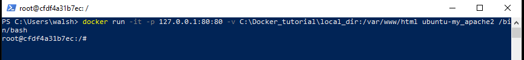
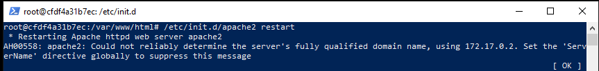

How to setup a web server on your local computer using docker
Pull an Ubuntu image from Dockerhub.
After logging into Docker, you can run “docker pull ubuntu” in your command line window.
Use “docker images” to check existing Docker images on your computer.

Commit Changes To A Docker Image
Run the Ubuntu image to start a Docker container, then log into this Ubuntu container:
Command: docker run -it ubuntu:latest /bin/bash
Install applications in this Ubuntu container.
Update system using“apt-get update”.
Install apache2 using “apt-get install apache2”.

Exit Ubuntu container
Use command “exit”

Commit container to create a new Docker image.
Check the container using “docker ps -a”
Create a new Docker image using “docker commit your_container_id ubuntu-my_apache2”.
ubuntu-my_apache2 is the name of a new Docker image.

Share Data Between a Docker Container and Host
Using command “docker run -it -p 127.0.0.1:80:80 -v H:\Docker_tutorial\local_dir:/var/www/html ubuntu-my_apache2 /bin/bash”

Restart Apache Server On Ubuntu
Start apache service using “/etc/init.d/apache2 restart” in your Docker container
